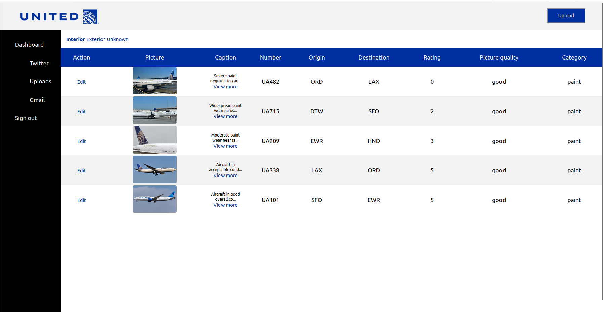

anthony@kovari:~$ aircraft-qa.txt
Built for United Airlines QA reviewers to assess aircraft appearance. A multi-model ML pipeline automatically ingests posts, runs them through a garbage classifier, interior/exterior classifier, paint quality scorer (0–10), and sentiment analyzer before surfacing results in a React dashboard for triage and action.
repository
github.com/anthonykovari/CSE498-UAQA-GHUBdashboard
